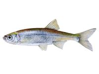

Верховодка.


Маленька (всього 12-15 см в довжину), дуже рухлива і красива рибка. Спина у неї сіро-блакитна із зеленим відливом; боки і черево сріблясто-білі. Спинний і хвостовий плавці сірі з темною облямівкою, інші плавці світло-сірі з жовтизною біля основи. Рот косою, спрямований вгору. Тіло верховодки вкрите дрібною блискучою лускою сріблястого кольору, яка так слабо сидить на шкірі, що злітає при найменшому дотику до неї руками, прилипає до них. Без перебільшення можна сказати, що першою здобиччю людини, яка взяла в руки вудку, стає верховодка. Для такого висновку є вагомі підстави. По-перше, вона живе рішуче у всіх великих і малих річках, річках і навіть струмках, водиться також у проточних і заливних озерах; непогано себе почуває в ставках з чистою і світлою водою і піщаним дном. По-друге, її зграї вражають своєю численністю. І по-третє, ніхто з риб, навіть хижих, так настирливо і сміливо на очах у рибалки не йде на приманку, як вона. Відбувається це не тому, що вона така хоробра, а тому, що вічно голодна. Пошуками їжі верховодка зайнята майже безперервно з раннього ранку і до пізнього вечора, а іноді і вночі, якщо стоїть безвітряна погода і низько літають комарі. Буквально за кожною впалою крихтою або крупинкою вона кидається стрімголов. З цієї причини зграйки уклейок постійно перебувають у русі. Незважаючи на те що верховодка риба ненажерлива, стіл її не назвеш різноманітним. Основна її їжа комахи, особливо мухи. Не гребує вона і планктоном. Але дуже любить ікру і виклюнувшихся з неї мальків, чим завдає великої втрати поголів’ю цінних риб. Сама відкладає ікру пізно, коли вода прогріється до 18-20°С. Нереститься зграями на трав’янистому мілководді. Для постійного проживання вибирає тихі і глибокі місця, але тримається там у верхніх шарах чи впівводи. Любить табунами гуляти біля плотів, купалень, мостових опор, в зонах різних водозливів, під гілками навислих над водою дерев. У затоках, ставках і озерах уникає зарослих травою місць; уникає і швидких перекатів. Ловлять верховодку легкою поплавцевою вудкою і нахлистом поверху або впівводи. Основна насадка – кімнатна муха. Восени (у вересні-жовтні), коли вона йде на глибину, насаджувати можна мотиля або маленького червоного черв’яка і тримати приманку ближче до дна. Вудіння верховодки справжня школа для починаючого рибалки. Саме на цій «тренувальній» рибі відпрацьовується вміння виробляти підсічки і витягувати видобуток з води. Справа в тому, що приманку верховодка бере з розгону і тут же тягне поплавець убік або занурює його. Варто лише на частку секунди забаритися з підсіканням, як приманка буде викинута з рота. Правда, це ще не означає, що залишена в спокої, верховодка рідко розлучається з крихтою і буде знову смикати насадку до тих пір, поки не зіб’є її або сама не попадеться на гачок. Підсікати її треба моторно, відразу, як тільки поплавок почне рух: подьоргуючись на місці поплавок свідчить лише про те, що вона зацікавилася насадкою. Але сильної підсічки робити не можна, досить ворухнути лише кінчиком вудилища, інакше губи уклійки будуть неодмінно порвані. Слабкі губи верховодки примушують також деяких завзятих вудильників відмовлятися від шкідливої ??звички висмикувати з води спійману рибу з такою силою, що вона летить на берег через голову рибалки. Верховодку подібним маневром витягати з води рідко вдається: як правило, вона, хоч і з порваною губою, але сходить з гачка. Після 5-10 сходів мимоволі станеш проявляти обережність при ловлі. Рибалок, які спеціально полюють за верховодкою, у нас дуже і дуже мало, хіба що початківці малолітки. Її ловлять зазвичай попутно з яльцем і пліткою. Але ця риба заслуговує уваги. М’ясо її за вмістом жиру (12%) перевершує м’ясо прославленого ляща. А при певній вправності верховодок можна наловити велику кількість. Гарні вони в консервованому вигляді, в усі, але особливо у в’яленому вигляді. Верховодки чудово йдуть на наживку при лові хижаків: ними ласують судаки, жерехи, головні та щуки.